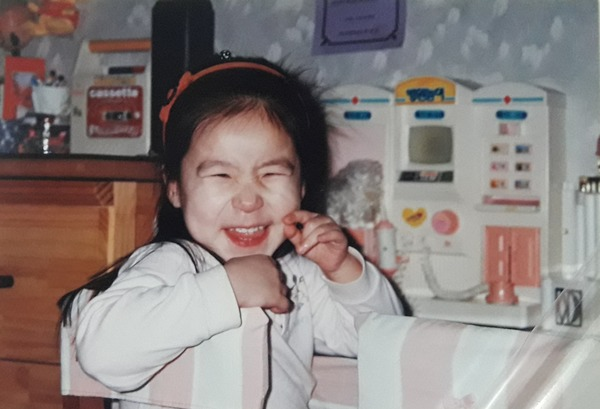

1 / 2

2 / 2

<짧은 소개>
안녕하세요. 저는 한국에서 태어나 지금까지 쭉 한국에서 살고있는 박듀트입니다.
개발공부를 시작한 지 일주일정도 되었습니다.(21XX년 9월 24일 기준)
호기롭게 To-do List 만들기 도전했다가 울면서 지웠습니다. 그래도 꾸준히 공부할 계획입니다.
hello. I am Park Duete who was born in South Korea and has been living in South Korea.
It's been about a week since I started studying for programming (as of 24th September, 21XX).
I pompously tried to make a To-Do List, and then I deleted it with tears. But, I plan to study steadily.